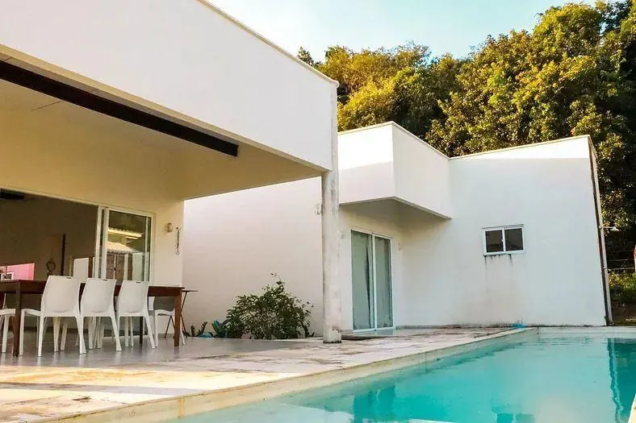

Casa Frida – casa de temporada com piscina e churrasqueira em Pipa
Casa moderna e colorida, com piscina, deck com espreguiçadeiras, churrasqueira e suíte com cama king.
8hóspedes
3quartos (1 suíte)
3,5banheiros
Simpiscina
Sobre a Casa Frida
A Casa Frida é uma hospedagem em Pipa com personalidade: cores, arte e uma área externa feita para aproveitar o clima do Rio Grande do Norte o ano inteiro.
São 3 quartos — uma suíte com cama king, um quarto com cama queen e um quarto com camas de solteiro — e 3,5 banheiros, para até 8 hóspedes. A varanda tem churrasqueira de inox e mesa redonda para 6, de frente para a piscina.
A cozinha é completa (cooktop, forno elétrico, micro-ondas, air fryer, cafeteira, adega) e a sala tem TV de 50 polegadas. Tudo isso no Condomínio Pipa Natureza, a poucos minutos do centro de Pipa e com trilha até a Praia do Madeiro.
Camas: 1 cama king, 1 queen e 4 de solteiro.
Comodidades
- Piscina
- Churrasqueira de inox na varanda
- Mesa de jantar para 6
- Suíte com cama king
- Ar-condicionado e ventilador de teto
- TV 50" e Chromecast
- Adega de vinhos
- Air fryer, cafeteira e forno elétrico
- Wi-Fi
- Vaga para 1 carro
- Roupa de cama e banho
- Limpeza incluída
Check-in a partir das 14h · Check-out até 11h
Condomínio Pipa Natureza, Quinta do Sol, Casa 39 – Praia da Pipa, Tibau do Sul/RN
Outras casas em Pipa